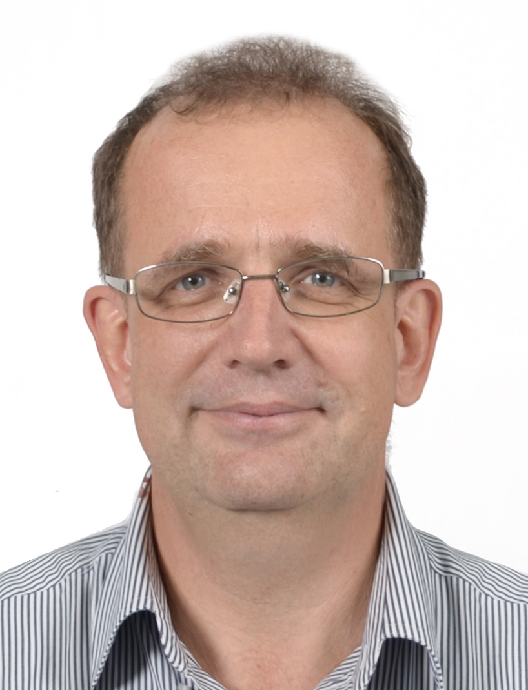

Peter Sprenger
Curriculum Vitae

19 Chestnut Street
Kitchener, ON, N2H1T6
Canada
Tel:+1-226-338-9910
e-mail: peter@krusp.com
work: Peter Sprenger
2017 – present:
Lead Magnetic Resonance, University of Waterloo, Canada
- Forschung und Entwicklung von Quantum Sensoren und Aktuatoren mit Magnetischer Resonanz
- Unterstützung von Studenten und Forschern bei neuen Experimenten
- Leitung des Elektronik Labors mit regelmässigen Kursen
2015 – 2017:
Managing Director, Kruthwong & Sprenger, Bangkok, Singapore
- Start und Operation von Kruthwong & Sprenger Pte.Ltd.
- Förderung von Innovation und Hightech
- Vertretung vin Hightech Firmen in Südostasien
2015 – 2017:
Consultant, JEOL Asia Pte. Ltd. Singapore
- Förderung von Analytischen Systemen für Jeol Asia
- Presentationen an wissenschaftlichen Konferenzen
- Einführung bei staatlichen und akademischen Institutionen in Südostasien
2013 – 2017:
Director, Member of the Board, Swiss Thai Chamber of Commerce, Bangkok, Thailand
- Direktor Newsletter publiziert auf swissthai.com
- Vertretung von Schweizer Geschäftsleuten an Konferenzen und Veranstaltungen
- Förderung der Schweizer Geschäftsinteressen in Thailand
2013 – 2015:
Consultant, Light Energy Systems, Balzers, Lichtenstein
- Förderung von faltbaren PV Anlagen, UrbanPlant
- Presentationen an Konferenzen und Solarseminaren in Thailand
1995 – 2015:
General Manager, Bruker South East Asia, Bangkok
- Start und Operation von Bruker South East Asia
- Start von Bruker Singapore Pte. Ltd, 1998, Position: Managing Director
- Start von Bruker Malaysia Sdn Bhd, 2001, Position: Managing Director
- Start von Bruker Indonesia, 2008, Position: Managing Director
- Start von Bruker Vietnam, 2012, Position: Managing Director
1991 - 1993:
Research and Development Engineer, Bruker Instruments, Billerica MA, United States
- Entwicklung von Hochfrequenz Sensoren
- Kompensationssysteme für externe Magnetfeldstörungen
1990 - 1991:
Analytical Systems Engineer, Bruker Biospin AG, Zurich, Switzerland
- Internationaler Kunden Support von NMR Spektrometern
- Ausbildung von NMR Technikern
1983 - 1986:
Digital Systems Technician, Bruker Biospin AG, Zurich, Switzerland
- Internationaler Kunden Support von Computer und Disksystemen
- Ausbildung von Computer Technikern
1993 - 1995:
Massachusetts Institute of Technology (MIT), Cambridge, MA, United States
- Master of Science (MSc) in Electrical Engineering and Computer Science
- Master of Science (MSc) in Nuclear Engineering
- Diplomarbeit: Resonator Design in MRI
- Stipendien: Bruker (2 Jahre), Mass.Gen.Hospital (1 Jahr), MIT (1 Jahr)
1986 - 1989:
Technical University, Rapperswil, Schweiz
- Bachelor of Science (BSc) in Electrical Engineering and Computer Science (El.Ing, HTL)
- Diplomarbeit: Digital Control System of 4th order plant
- Industriepreis fuer beste Diplomarbeit
- Stipendien: Bruker (3 years), Canton St.Gallen (3 years)
1979 – 1983:
Siemens Transportation Systems, Wil (Häni-Prolektron), Schweiz
- Berufslehre EFZ, Elektroniker
- Entwicklung, Fertigung, Testen von elektronischen Komponenten Leitsysteme für den öffentlichen Verkehr
Patente and Publikationen
Poster SMRI 1994:
Gradient Birdcage Resonator Design
Anal.Chem. 77, 2005, 1655-1662:
Polym. Eng. Sci.46, 2006, 1684-1690:
Analytica Chimica Acta, 2008, 48-55:
Quantum Eng.Vol 1, Issue 4 Dec 2019:
Freiwillige Arbeit für die Gemeinschaft
Skills:
Programmieren: C, Python, Matlab, Mathematica, Java(Script), HTML, CSS
CAD: Onshape, KiCad, Spice
IT: MS-Office, Salesforce, Google
Praktisch: Drehen, Fräsen, Bohren, 3D-Drucken
Sprachen:
Deutsch, Englisch, Thailändisch
Hobbys:
Lesen, Wissenschaft, Familie, Fussball, Wandern, Skifahren, Ereuerbare Energien, Kochen, Alphorn
Persönliches
Geburtsdatum: 16. Juli 1963
Schweizer, verheiratet, Niederlassungsbewilligung Thailand
Kinder: Natalie 21, Denis 22, Andre 24